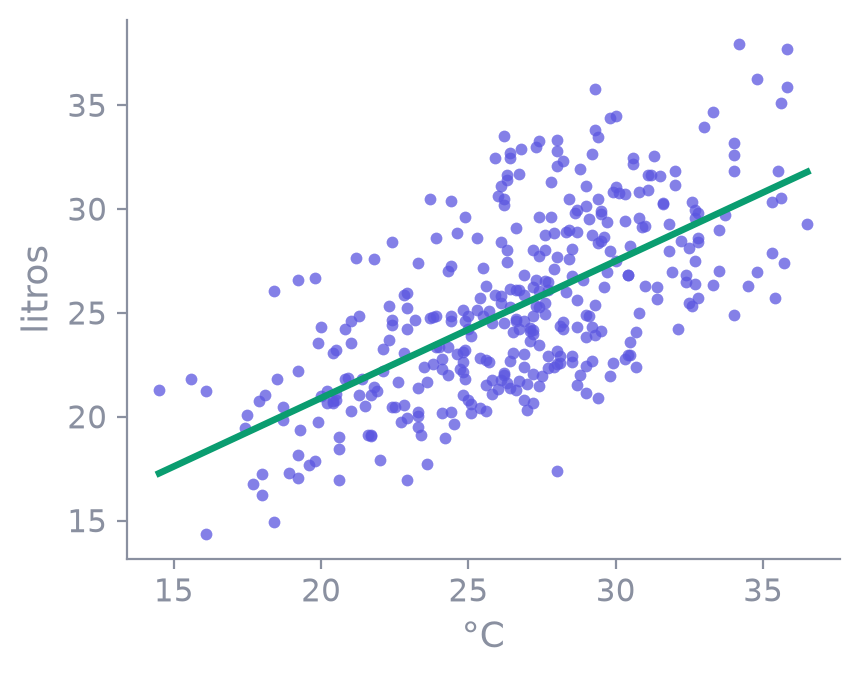
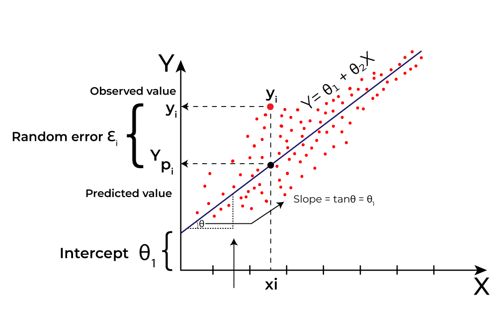

A melhor reta pelos dados, o que ela aprende
e como saber se o modelo está bom
Você traça a melhor linha reta que passa pelos seus dados. Essa linha serve para prever valores novos.


preço (mil R$) = 50 + 3 × m²
| casa nova | conta | preço previsto |
|---|---|---|
| 90 m² | 50 + 3 × 90 = 50 + 270 | R$ 320 mil |
Entra um tamanho que o modelo nunca viu, ele aplica a reta e devolve o preço.
Pode ter quantas colunas quiser: 5, 6, 8… Em vez de uma reta, o modelo vira um hiperplano.
w = pesos (coeficientes) · φ(x) = as colunas de entrada · ε = ruído (o erro que sobra) · D = número de colunas
Cinco colunas → cinco coeficientes. Cada um diz quanto aquela coluna empurra a saída para cima (+) ou para baixo (−).
O treino é o mesmo de antes: minimizar o erro quadrático médio, agora procurando o melhor conjunto de coeficientes.
A fração da variação da saída que o modelo conseguiu explicar. Vai até 1.
y real · ŷ previsto · ȳ média dos reais
| R² | como ler |
|---|---|
| 1,0 | acerta tudo (na prática, desconfie) |
| 0,9 | já é considerado forte para regressão (depende da área) |
| 0,8 | captura 80% do que faz os preços mudarem |
| 0 | não explica nada: igual a chutar sempre a média |
Modelo: preço = 50 + 3 × m² (em mil R$). Erro = previsto − real.
| casa | m² | previsto | real | erro |
|---|---|---|---|---|
| A | 60 | 230 | 220 | +10 |
| B | 80 | 290 | 295 | −5 |
| C | 100 | 350 | 365 | −15 |
| D | 120 | 410 | 460 | −50 |
n = número de casos · p = número de colunas de entrada
| exemplo (50 casas) | R² | R² ajustado |
|---|---|---|
| 5 colunas úteis | 0,80 | 0,78 |
| + 5 colunas lixo | 0,81 ↑ | 0,76 ↓ |
O modelo errou 10, 5, 15 e 50 mil reais. O sinal não entra: 10 a mais ou 10 a menos é o mesmo erro.
(10 + 5 + 15 + 50) / 4 = 20
Biblioteca que guarda cada treino, para comparar depois. Site: https://mlflow.org
import os
os.environ["MLFLOW_ALLOW_FILE_STORE"] = "true"
import mlflow
mlflow.set_tracking_uri("mlruns")
mlflow.set_experiment("cerveja")MLFLOW_ALLOW_FILE_STORE libera a pasta mlruns. set_tracking_uri diz onde gravar. set_experiment abre o experimento, ou cria se não existir.
with mlflow.start_run(run_name="temperatura"):
mlflow.log_param("entradas", "Temperatura Maxima (C)")
mlflow.log_metrics({"mae": mae, "r2": r2})
mlflow.log_artifact("reta.png")
mlflow.log_input(mlflow.data.from_pandas(dataset, name="cerveja"), context="training")
mlflow.sklearn.log_model(modelo, name="modelo")| método | o que grava |
|---|---|
| start_run | abre a run, com um nome |
| log_param | um texto: quais colunas entraram |
| log_metrics | números: MAE e R² |
| log_artifact | um arquivo: a figura da reta |
| log_input | o arquivo de dados. Enche a coluna Dataset |
| sklearn.log_model | a reta treinada. Enche a coluna Models |
MLFLOW_ALLOW_FILE_STORE=true mlflow ui --backend-store-uri mlrunsAbre http://127.0.0.1:5000. Lá está o experimento cerveja, uma linha por run.
No Python, mlflow.search_runs lê essa mesma tabela. É o que o caderno 03 usa para desenhar o gráfico.
Destino: Salvar como PDF. Margens: nenhuma. Gráficos de segundo plano: ativado.